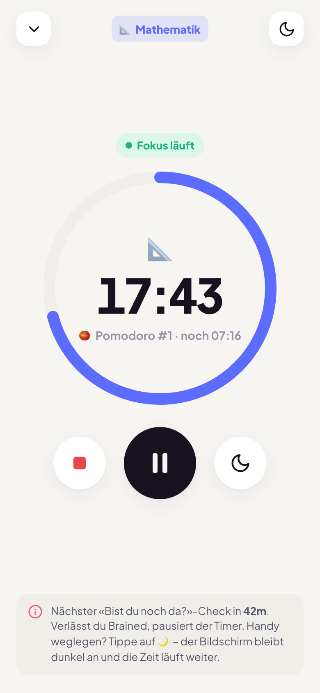
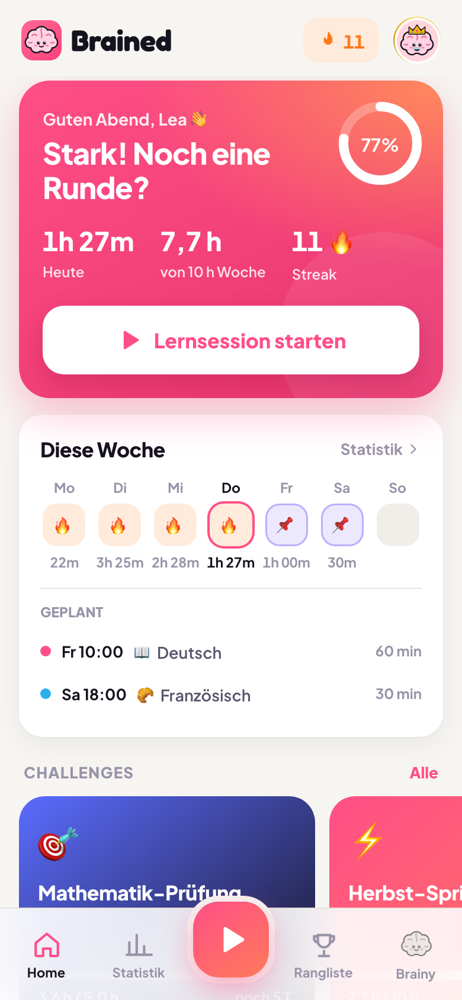
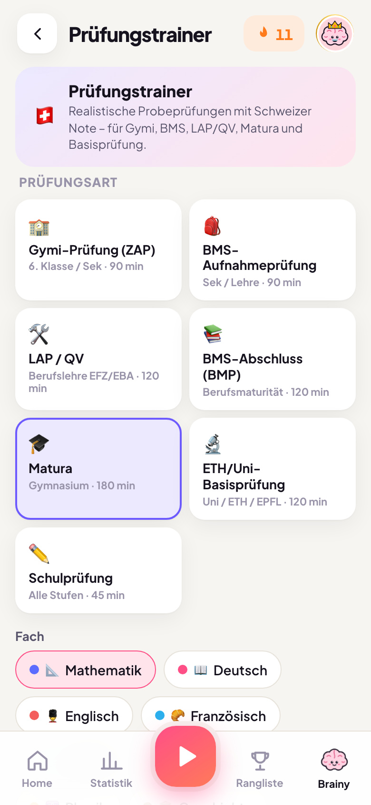
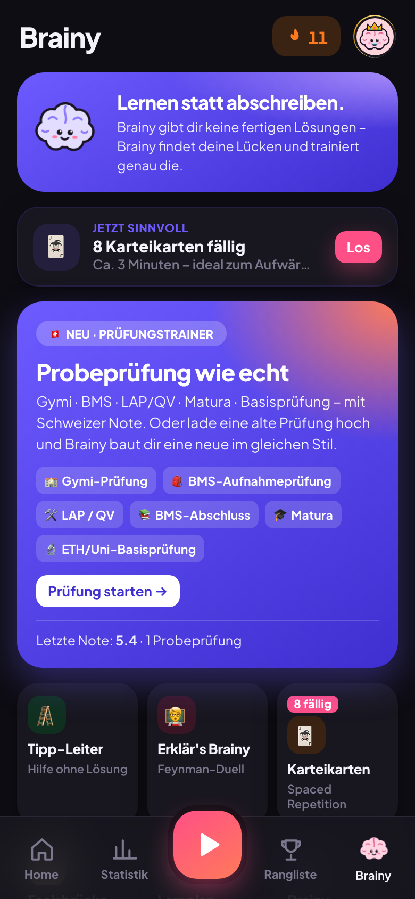
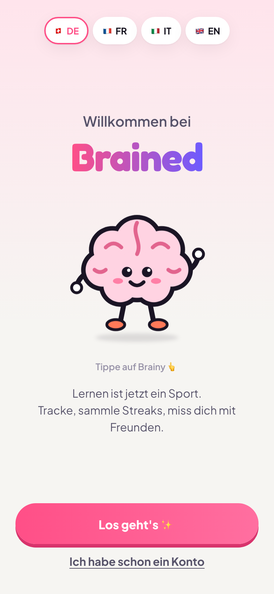
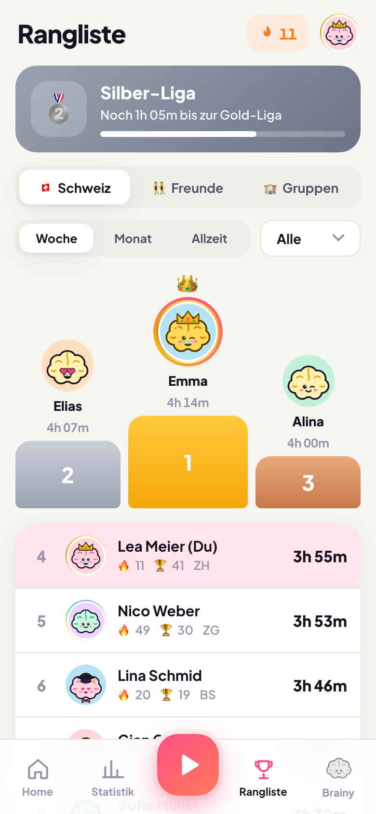
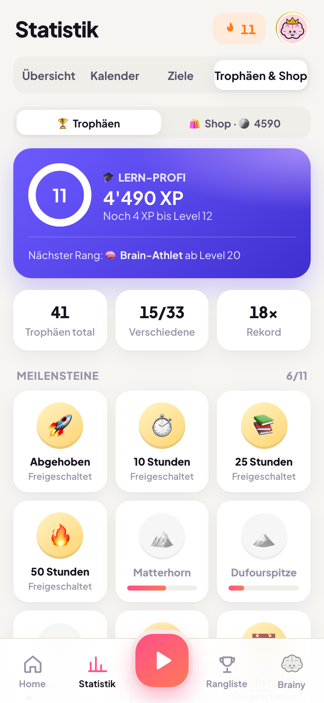
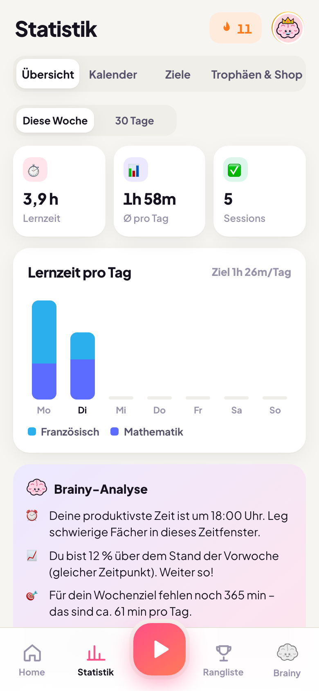
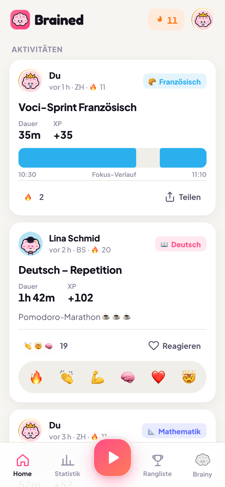

⏱️
Lernen tracken
Fach wählen und den Timer starten: Stoppuhr, Pomodoro oder Zielzeit. Verlässt man die App, pausiert der Timer automatisch.
Brained hilft Schülerinnen und Schülern, dranzubleiben: Lernzeit wird sichtbar, Fortschritt wird belohnt und mit Freunden lernt es sich leichter. Vor der Prüfung kann man mit Probeprüfungen üben, die wie die echten aufgebaut sind.
✓ Für die Volksschule, Gymi, BMS, Lehre & Matura ✓ DE · FR · IT · EN ✓ Daten in Europa


Viele Jugendliche wissen, dass sie lernen sollten, aber es fehlt an Motivation und Struktur. Bei Sport-Apps wie Strava sieht man jeden Lauf, sammelt Erfolge und misst sich mit Freunden. Brained überträgt dieses Prinzip aufs Lernen.
Fach wählen und den Timer starten: Stoppuhr, Pomodoro oder Zielzeit. Verlässt man die App, pausiert der Timer automatisch.
Streaks, Level und Trophäen belohnen regelmässiges Lernen, schon ab 5 Minuten am Tag.
Ranglisten mit Freunden, der Klasse oder einer Lerngruppe und ein gemeinsames Wochenziel.
Auto-Pause und ein kurzer Präsenz-Check sorgen dafür, dass nur echte Lernzeit zählt.
Schwarzer Bildschirm ohne Ablenkung. Die Lernzeit läuft weiter, das Handy bleibt ruhig.
Tägliche Serien, Level und über 30 Trophäen machen Fortschritt sichtbar.
Schweiz, Kanton, Freunde oder Klasse. 18 Ligen von Bronze bis Legende.
Gruppe erstellen, Code teilen und gemeinsam auf ein Wochenziel hinarbeiten.
Sehen, wer gerade lernt, und Freunde mit einem Emoji anfeuern.
Lernzeit pro Fach, Wochenziel und ein Kalender zum Planen.
Deutsch, Französisch, Italienisch und Englisch.

Man wählt Prüfung und Fach, und Brained erstellt eine neue Probeprüfung mit gleicher Dauer, ähnlichen Aufgabentypen und gleicher Punkteverteilung wie das Original. Mit Lösungen und Note. Grundlage sind die offiziellen Angaben der Kantone.
Statt Lösungen vorzusagen, findet Brainy heraus, wo es noch hapert, und übt genau das.

Nur echte Lernzeit zählt. Melden und Blockieren mit einem Tipp, Schutzfilter für Namen und Texte, keine Werbung und kein Datenhandel. Die Daten liegen in Europa.
Eine Gruppe mit Code lädt alle ein. So lässt sich gemeinsam auf ein Ziel hinarbeiten, und Lernbegleiter sehen, ob dran gearbeitet wird.





Brained startet Anfang November 2026. Wir freuen uns über jede Rückmeldung, Fragen und Ideen.